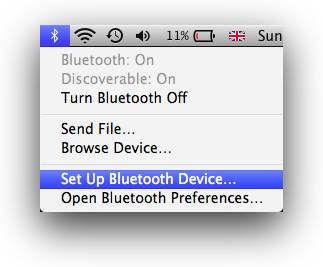
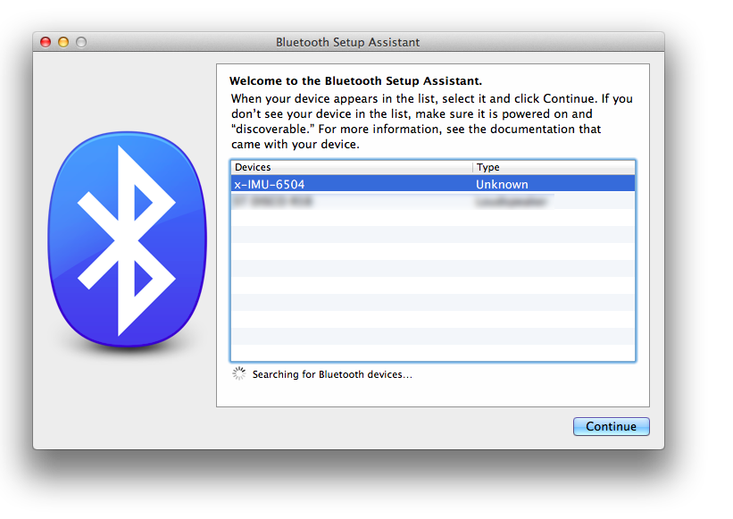
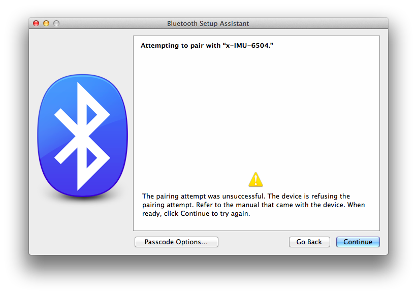
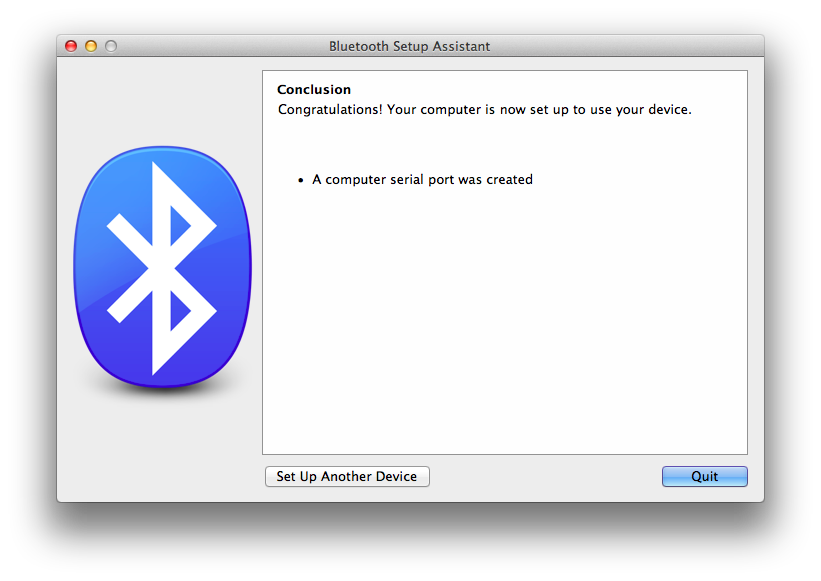

In order to use your x-IMU unit over Bluetooth you first need to pair it with your Mac.
To begin the Bluetooth pairing process, first select Set Up Bluetooth Device... from the Bluetooth menu bar application.
Select your x-IMU-XXXX device from the Bluetooth Setup Assistant, where “XXXX” is the ID of your device, and click Continue.
The pairing will initially fail, because the x-IMU doesn't have a passcode. Click Passcode Options... to bring up the passcode options dialog.
Select Do Not use a passcode with this device then click OK.

Pairing is now complete. Click Quit. You will need to restart IMU2OSC for the device list to refresh.
